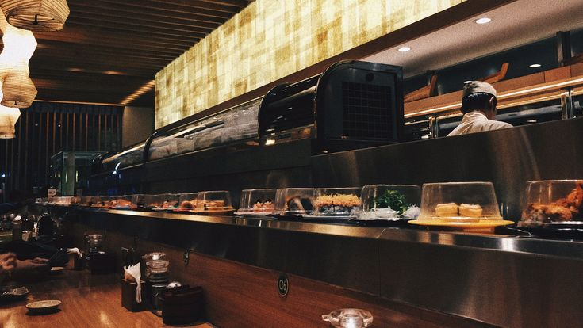

Seja bem-vindo ao Komorebi!


Sobre o Komorebi
Komorebi nasceu da paixão pela culinária japonesa tradicional e pelo desejo de trazer ao público uma experiência acolhedora e autêntica. Nossa proposta é unir ingredientes frescos, técnicas clássicas e um ambiente que remeta ao equilíbrio e à simplicidade do Japão.
Preservando o respeito pelas estações e pelo sabor natural dos alimentos, nosso cardápio celebra receitas cuidadosamente preparadas para despertar memórias e criar novas histórias à mesa. Do sushi ao prato quente, cada detalhe é pensado para oferecer uma refeição memorável.
"Komorebi — a luz que filtra pelas folhas" — esse espírito de delicadeza e harmonia guia nossa cozinha e nosso atendimento.

Reservas
Reserve sua mesa e desfrute de uma experiência especial da culinária japonesa no Komorebi.
Entre em contato